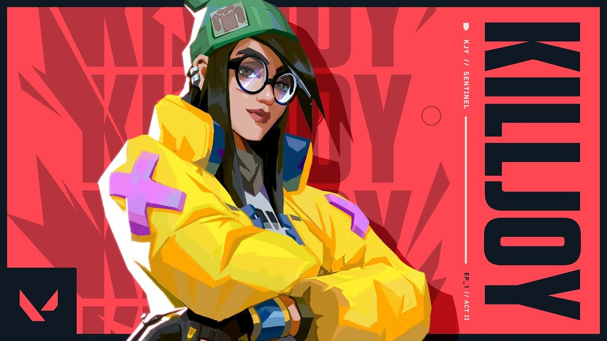

Metodologia Agil
Após realizar cursos de Scrum e Kanban, hoje entende a importancia desta metodolodia e busca aplicar no dia a dia durante o curso de Engenharia de Software, tanto para ajudar agerir sua equipe de trabalho quanto para a organização do seu horario pessoal
Curso realizado no ano de 2020
Contato com a natureza
Keven gosta de manter contato com a natureza, em sua cidade natal aos fins de samana pescava com seu avô e mantinha esse contato desde quando era criança
Os rios que mais frequentava para pesca e passeio era o Jamari e Candeiras
Games
Keven tem contato com jogos desde criança, pois seu padrasto possuia uma Lan House o qual jogou diversos jogos desde Fliperama, SuperNintendo, PS2, jogos online pelo computador...

Jogo atual favorito: Valorant, o qual usa a Agente KillJoy

Filmes
Gosta muito de filmes, pricipalmente dos classicos de ficção como "De Volta para o futuro", "Matrix" ,"Blade Runner", o Universo de "Star Wars", "Gattaca" entre outros, também gosta de filmes atuais.
Atualmente acompanhando a série Falcão e Soldado Invernal